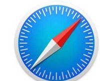
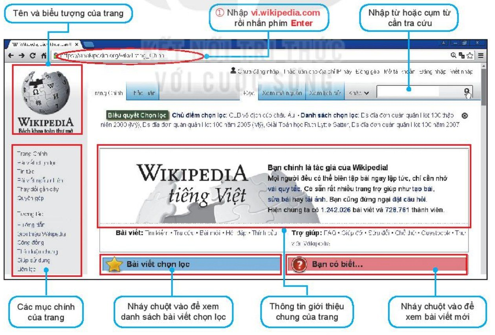
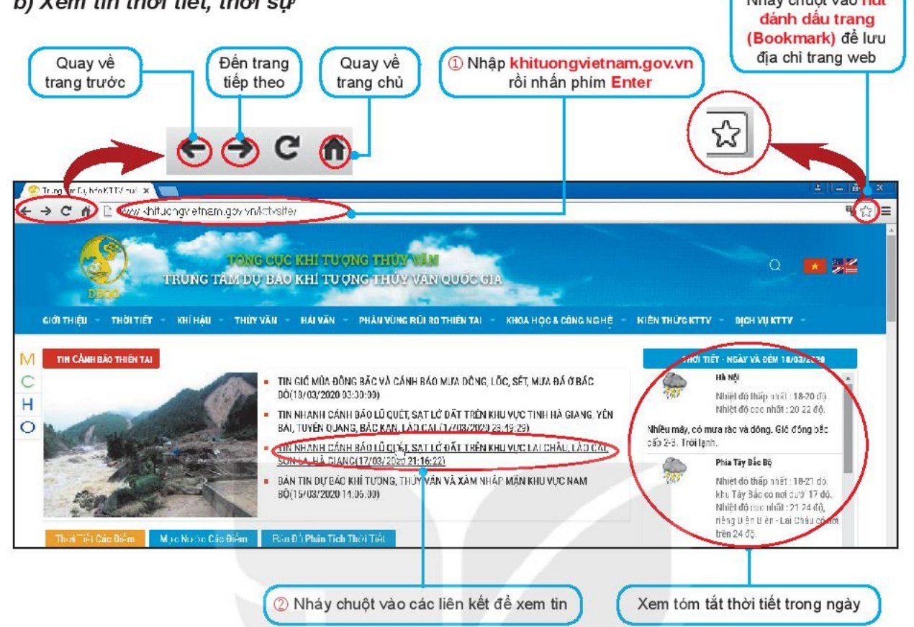
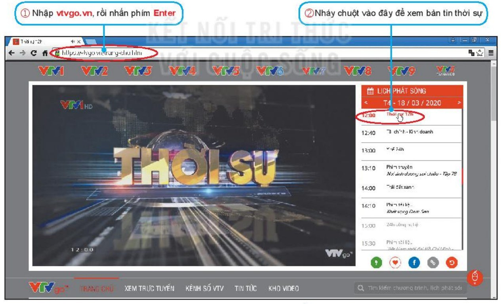
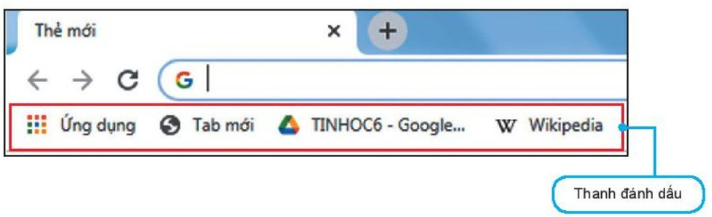

Bài 6 — Mạng thông tin toàn cầu
2 tiết · Tiết 1: Trang web, website, trình duyệt
Tiết 2: Thực hành khai thác thông tin trên trang web
How is information organised in a book?
Thông tin trong một cuốn sách được tổ chức như thế nào?
Còn trên Internet? Em đã xem những dạng thông tin nào: chữ, ảnh, video, âm thanh…?
Đang đọc về “Hà Nội”, em muốn biết thêm về “Hồ Gươm”. Em làm thế nào?
Hồ Gươm (hồ Hoàn Kiếm) nằm ở trung tâm Hà Nội. Giữa hồ có Tháp Rùa.
A hypertext page mixes many kinds of data + links.
All websites on the Internet, linked together = the World Wide Web (WWW).
Hệ thống các website trên Internet tạo thành mạng thông tin toàn cầu — như một mạng nhện khổng lồ bao trùm thế giới.Trang siêu văn bản là:
✅ B — nhiều dạng dữ liệu và có liên kết.
Name a website that helps you learn.
Hãy nêu địa chỉ một số website có nội dung phục vụ việc học tập.
Muốn truy cập website, em cần một phần mềm ứng dụng gọi là trình duyệt web (web browser).

Bài viết chọn lọc: Vịnh Hạ Long 👆
Bạn có biết… · Tin tức · Trợ giúp
Tên nào sau đây không phải là tên của trình duyệt web?
What is a web browser?
Trình duyệt web là gì? Người dùng khai thác thông tin từ các trang web bằng cách nào?
Làm theo cặp · ghi kết quả vào phiếu thực hành (slide 24)




| Trang web | Tên & biểu tượng | Các mục chính | 1 thông tin em thu được |
|---|---|---|---|
| 📚 Wikipedia | |||
| 🌦️ Thời tiết | |||
| 📺 Thời sự |
Liên kết nào nên nháy, liên kết nào nên bỏ qua?
🙋 Không chắc chắn? Hỏi thầy cô hoặc bố mẹ trước khi nháy.
Thông tin trên Internet được tổ chức như thế nào?
✅ C
| A | B | ✔ |
|---|---|---|
| 1) Website là tập hợp | a) sử dụng trình duyệt web. | 1–c |
| 2) Khi duyệt web, muốn chuyển đến nội dung hoặc trang web khác thì ta nháy chuột vào | b) website trên Internet. | 2–d |
| 3) Để truy cập các trang web ta cần | c) các trang web liên quan được truy cập thông qua một địa chỉ. | 3–a |
| 4) WWW là hệ thống các | d) liên kết trỏ đến đó. | 4–b |
Có điểm gì khác nhau giữa cách tổ chức thông tin trong cuốn sách và trên Internet?
| 📖 Cuốn sách | 🌐 Internet | |
|---|---|---|
| Tổ chức | Tuần tự: chủ đề → bài → trang | Trang siêu văn bản nối bằng liên kết |
| Cách đọc | Lật trang, tra mục lục | Nháy liên kết, nhảy đến trang khác |
| Dạng thông tin | Chữ, hình ảnh | Chữ, hình, âm thanh, video… |
| Cập nhật | In xong thì cố định | Cập nhật thường xuyên |
Dùng trình duyệt truy cập 2 trang web sau, xem tên, biểu tượng, các mục chính, theo các liên kết; lưu trang em thích vào thanh đánh dấu.